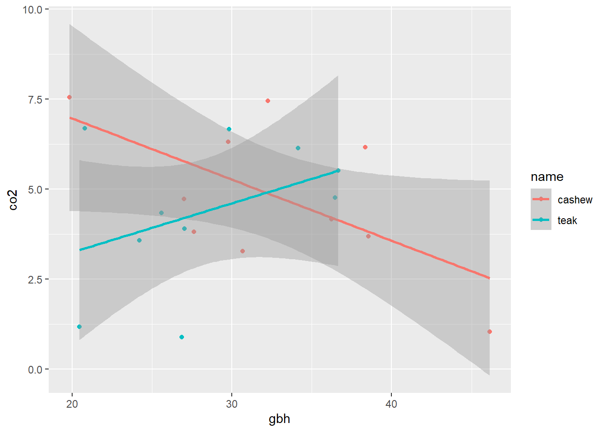
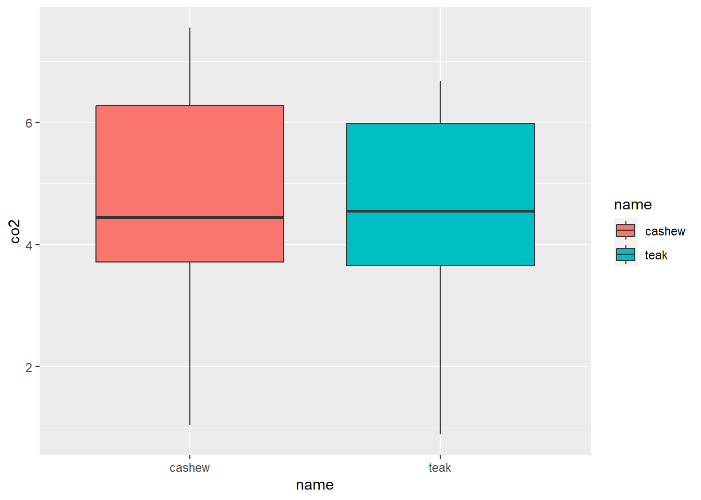
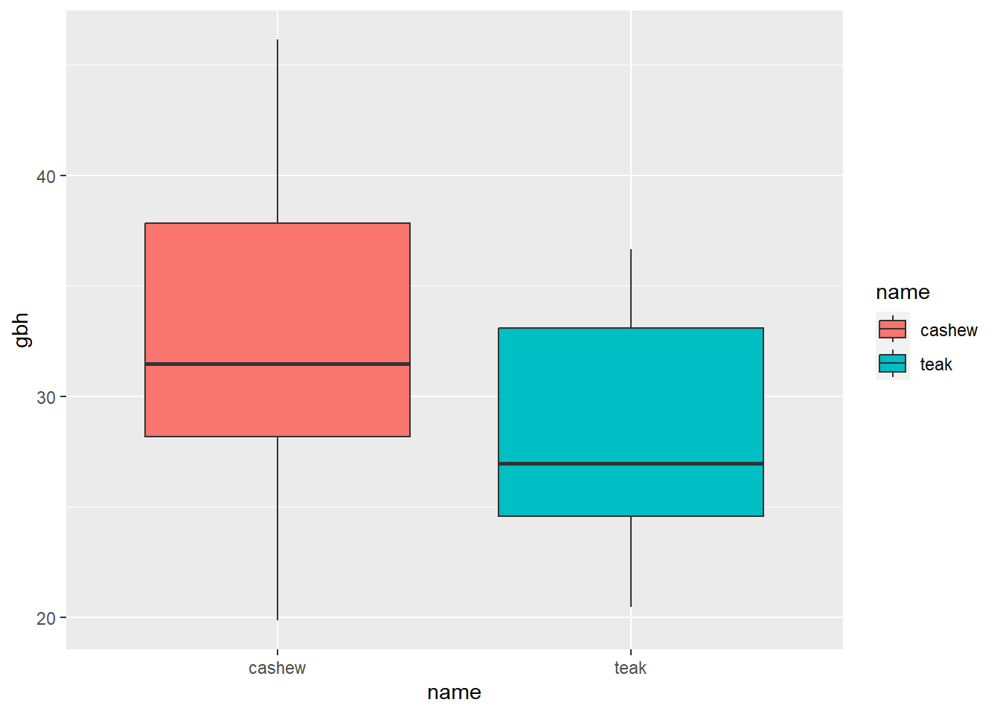
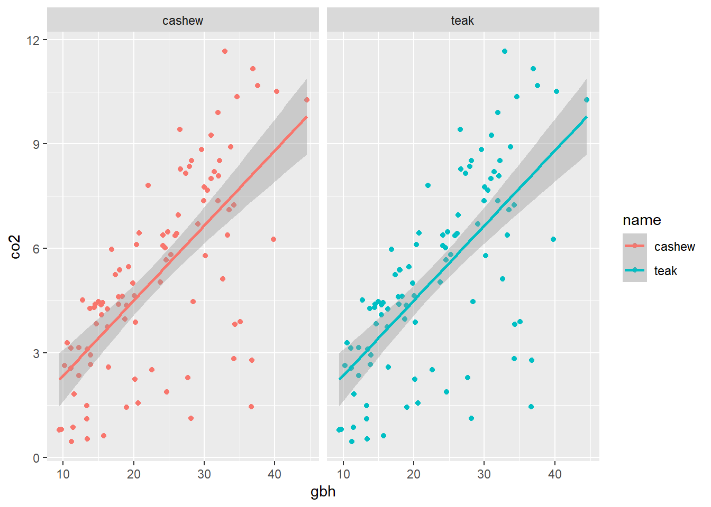
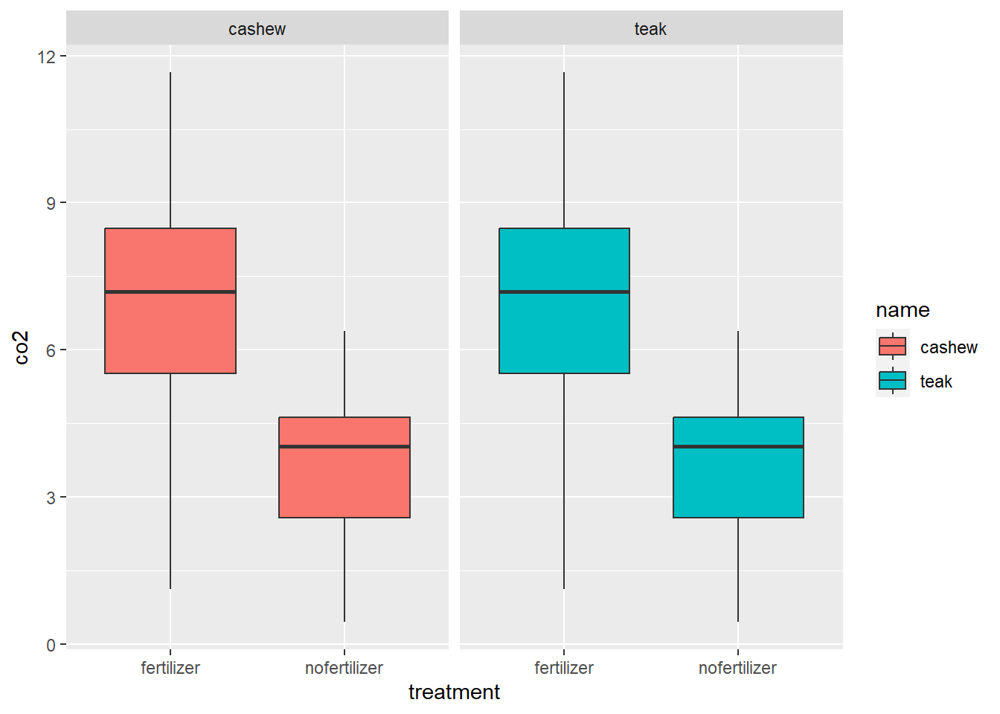
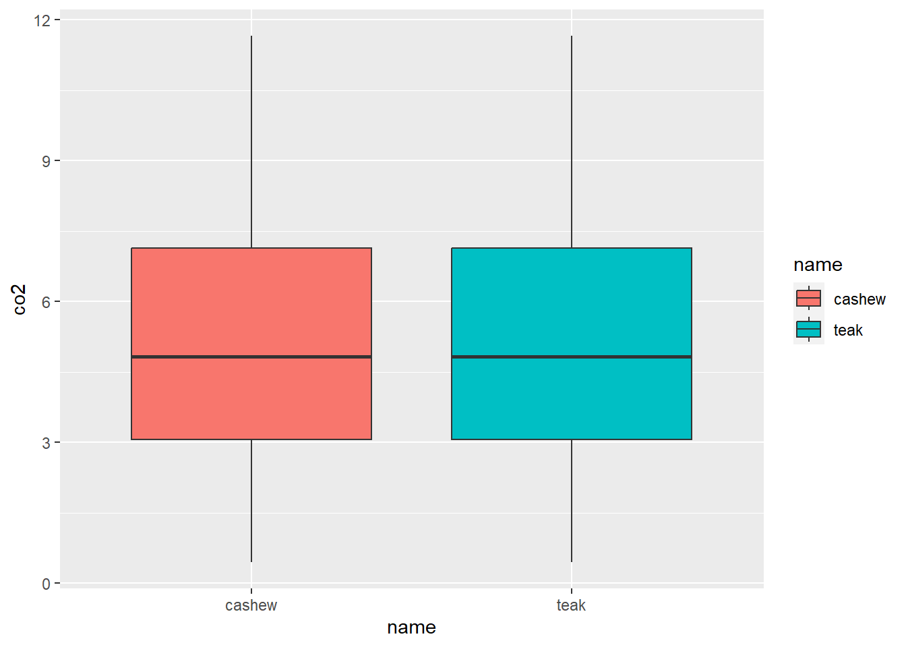
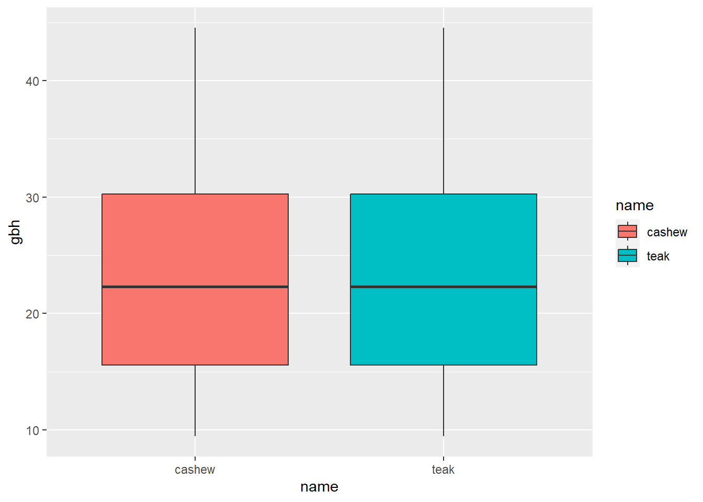

Chapter 8 Data Visualization
Condensing intricate data into numerical summaries inevitably leads to some loss of information. Visualization, though it also involves some information loss, can be less so when executed effectively. A thorough data analysis should always begin with a phase where the analyst deeply familiarizes themselves with the data they’re working with. This process of gaining a deep understanding is integral to data analysis, and visualization plays a crucial role in it.
The vague & defeasible rule of thumb of good data visualization (according to the Edward Tufte).
“Communicate a maximal degree of relevant true information in a way that minimizes the recipient’s effort of retrieving this information.”##
## Attaching package: 'dplyr'## The following objects are masked from 'package:stats':
##
## filter, lag## The following objects are masked from 'package:base':
##
## intersect, setdiff, setequal, unionname <- c(rep('cashew', 10),
rep('teak', 10))
gbh <- rnorm(20,
mean = 30,
sd = 5)
# make a data frame
# 20 trees of same sp.
# different GBH
name <- c(rep('cashew', 10),
rep('teak', 10))
gbh <- rnorm(20,
mean = 30,
sd = 5)
df <- data.frame(name, gbh)
View(df)
library(dplyr)
newdf <- df %>%
mutate(co2= gbh * rnorm(20, 0.2, 0.1)) # co2 is a new column based gbh
str(newdf)## 'data.frame': 20 obs. of 3 variables:
## $ name: chr "cashew" "cashew" "cashew" "cashew" ...
## $ gbh : num 32.2 27.6 19.8 30.7 29.8 ...
## $ co2 : num 7.45 3.81 7.55 3.28 6.31 ...## `geom_smooth()` using formula = 'y ~ x'


# new df with treatment
set.seed(007) # any number
treatment <- c(rep('nofertilizer', 50),
rep('fertilizer', 50))
name <- c(rep('cashew', 100),
rep('teak', 100))
gbh <- c(rnorm(50,
mean = 15,
sd = 4),
rnorm(50,
mean = 30,
sd = 6))
df <- data.frame(treatment,
name,
gbh)
str(df)## 'data.frame': 200 obs. of 3 variables:
## $ treatment: chr "nofertilizer" "nofertilizer" "nofertilizer" "nofertilizer" ...
## $ name : chr "cashew" "cashew" "cashew" "cashew" ...
## $ gbh : num 24.1 10.2 12.2 13.4 11.1 ...co <- rnorm(20, 0.2, 0.1) # kg
newdf <- df %>%
mutate(co2= gbh * co) # co2 is a new column based gbh
str(newdf)## 'data.frame': 200 obs. of 4 variables:
## $ treatment: chr "nofertilizer" "nofertilizer" "nofertilizer" "nofertilizer" ...
## $ name : chr "cashew" "cashew" "cashew" "cashew" ...
## $ gbh : num 24.1 10.2 12.2 13.4 11.1 ...
## $ co2 : num 6.08 2.64 2.35 1.1 2.57 ...## [1] "treatment" "name" "gbh" "co2"ggplot(data = newdf, aes(x = gbh, y = co2, col= name)) +
geom_point() +
geom_smooth(method = 'lm') +
facet_wrap(~ name)## `geom_smooth()` using formula = 'y ~ x'
# ?facet_wrap
# help(facet_wrap)
ggplot(data = newdf, aes(x = treatment, y = co2, fill= name)) +
geom_boxplot() +
facet_wrap(~ name)

